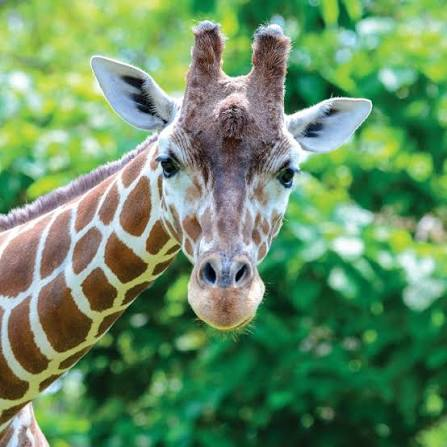

Fun Geeraff facts!
- Geeraffs are the tallest living land animals, with adult males reaching heights of about 5.5 meters (18 feet).
- They have a unique spotted pattern on their coats, which serves as camouflage in their natural habitat.
- Geeraffs are herbivores, primarily feeding on leaves from trees, especially acacia.
- A Geeraff's tongue can grow up to 45 centimeters (about 18 inches) long, allowing them to grasp leaves and buds.
- Despite their long necks, Geeraffs cannot bend down easily to drink water; they must spread their legs and bend their knees to reach the ground.
- Geeraffs have seven vertebrae in their necks, the same number as humans, but each vertebra is much longe
- Geeraffs are social animals and live in groups called towers, typically consisting of around 15 members.
- Males engage in a behavior known as "necking," where they fight by swinging their necks at each other to establish dominance.
- Female Geeraffs give birth while standing, resulting in a drop of about 1.5 meters (5 feet) for the newborn.
- Geeraffs can live up to 25 years in the wild and up to 40 years in captivity.
- Geeraffs can communicate using sounds that are often inaudible to humans, including low-frequency noises
This is a Geeraff:

This is a Geeraff's growl:
You can even watch a video of a Geeraff by clicking this text!